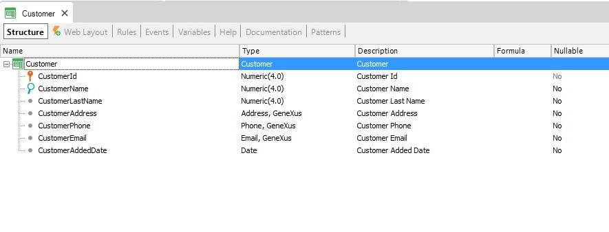

When defining a Transaction object, a default Layout is automatically created by GeneXus to specify the way the user will access data in web applications. This Layout may be modified.
The edited screen that is finally saved will be the screen that will always appear. Note that all attributes present in the Layout must be previously declared in the Transaction Structure.
Suppose the following Transaction structure:

The default Web Layout will be generated as follows:
Transaction Structure
Structure Editor
Delete Cascade
| Backlinks | |
| Equal rule | Toc:GeneXus - Table of contents |
| Category:Transaction object | Web Transactions |